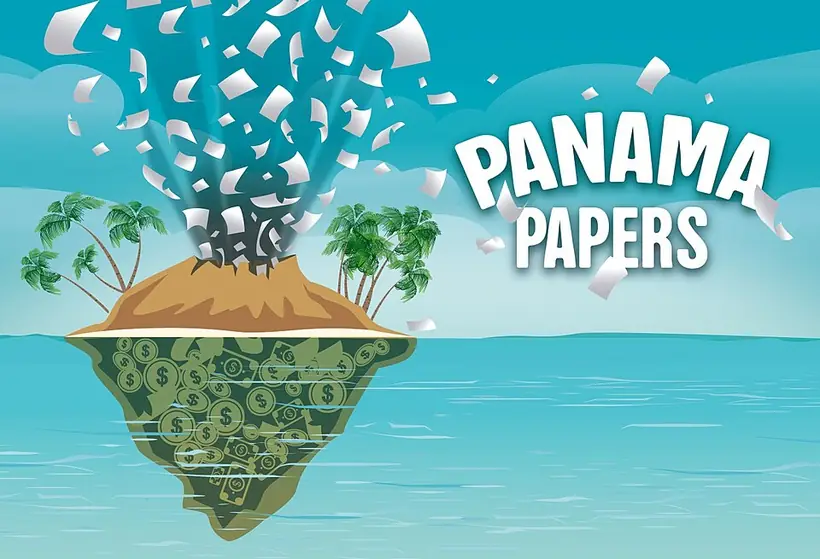
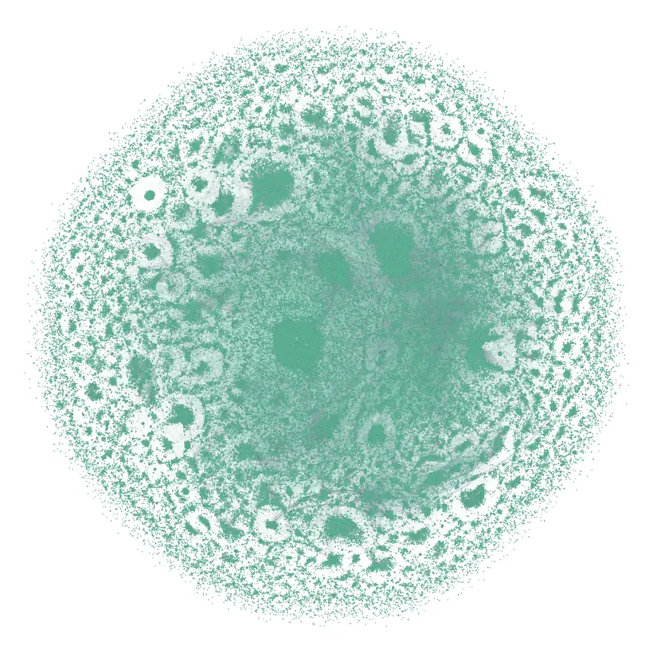

The leak
In April 2016, the International Consortium of Investigative Journalists and more than 100 media partners published findings from the internal archive of Mossack Fonseca, a Panamanian law firm specialising in offshore companies. The data covered four decades and around 214,000 entities.
Maps, diagrams and images





The documents showed how shell companies, bearer shares and nominee directors were used to hold assets while obscuring ownership — by politicians, business figures, celebrities and, in some cases, sanctions evaders and criminals.
The consequences
Iceland's prime minister resigned after revelations about undeclared offshore holdings. Pakistan's prime minister was disqualified by the Supreme Court. Several countries opened criminal investigations, and the EU moved on beneficial-ownership registers.
Mossack Fonseca closed in 2018.
Offshore is not the same as illegal. Many structures were lawful tax planning; holding a company in Panama was not a crime. The story was about secrecy, conflicts of interest and the enabling industry — and about the specific cases where the law was broken.
Ownership, not evasion, was the core finding. The most important number in the reporting was not the money but the opacity: how little of the world's asset ownership could be traced to a human being.
The follow-up matters. The same consortium published the Paradise Papers (2017) and Pandora Papers (2021), showing the structure was systemic rather than one firm's practice.
Why it is a documented case
The documents are primary evidence, the reporting was collaborative and independently checked, and the legal consequences are on the record in multiple jurisdictions. It is the model for how a leak becomes a finding rather than a rumour.
It is also the honest counterweight to the archive's more speculative material: the scale of hidden wealth is genuinely larger than most people assume, and the evidence for it did not come from inference. It came from the files.
Sources for this page
- ICIJ, the Panama Papers investigationwww.icij.org
- ICIJ, the Pandora Papers (2021) follow-upwww.icij.org
- Wikipedia, “Panama Papers” — scope, consequences, criticismen.wikipedia.org
- Transparency International, on beneficial ownership registerswww.transparency.org
Open resources on this topic
- BookSecrecy world : inside the Panama Papers investigation of illicit money networks and the global elite — Bernstein, Jake, author · 2017 (Internet Archive, free to read)
- BookBeyond the Panama papers : the performance of EU good governance promotion — 2017 (Internet Archive, free to read)
- BookBeyond the Panama Papers. The Performance of EU Good Governance Promotion - The Anticorruption Report, volume — 2017 (Internet Archive, free to read)
- PapersOpen-access articles: DOAJ · PubMed Central · Internet Archive Scholar
- BooksPublic-domain and borrowable copies: Open Library · Project Gutenberg · Google Books
More images
Cite this page
Momin, S. (2026). The Panama Papers. The Larger World Archive. https://drsamonline.github.io/LARGE_GLOBE/panama-papers.htmlMomin, Sohil. “The Panama Papers.” The Larger World Archive, 2026, https://drsamonline.github.io/LARGE_GLOBE/panama-papers.html.Momin, Sohil. “The Panama Papers.” The Larger World Archive, 2026. https://drsamonline.github.io/LARGE_GLOBE/panama-papers.html.@misc{the2026panama,
author = {Momin, Sohil},
title = {The Panama Papers},
year = {2026},
howpublished = {The Larger World Archive},
url = {https://drsamonline.github.io/LARGE_GLOBE/panama-papers.html},
note = {Last reviewed 20 November 2026}
}Last reviewed 20 November 2026 · Corrections policy · this page is not peer reviewed